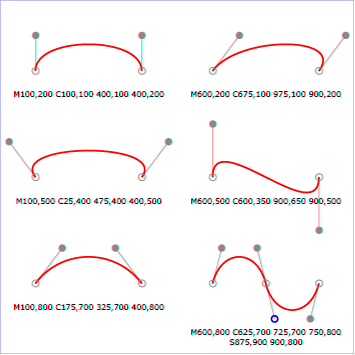
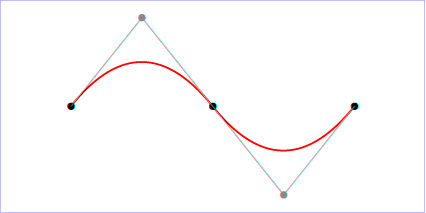
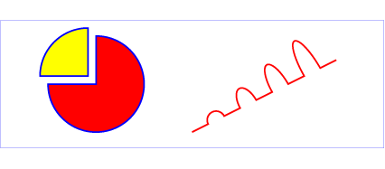

Paths represent the outline of a shape which can be filled, stroked, used as a clipping path, or any combination of the three. (See Filling, Stroking and Paint Servers and Clipping, Masking and Compositing.)
A path is described using the concept of a current point. In an analogy with drawing on paper, the current point can be thought of as the location of the pen. The position of the pen can be changed, and the outline of a shape (open or closed) can be traced by dragging the pen in either straight lines or curves.
Paths represent the geometry of the outline of an object, defined in terms of moveto (set a new current point), lineto (draw a straight line), curveto (draw a curve using a cubic Bézier), arc (elliptical or circular arc) and closepath (close the current shape by drawing a line to the last moveto) elements. Compound paths (i.e., a path with multiple subpaths) are possible to allow effects such as "donut holes" in objects.
This chapter describes the syntax, behavior and DOM interfaces for SVG paths. Various implementation notes for SVG paths can be found in 'path' element implementation notes and Elliptical arc implementation notes.
A path is defined in SVG using the 'path' element.
<!ENTITY % SVG.path.extra.content "" >
<!ENTITY % SVG.path.element "INCLUDE" >
<![%SVG.path.element;[
<!ENTITY % SVG.path.content
"(( %SVG.Description.class; )*, ( %SVG.Animation.class;
%SVG.path.extra.content; )*)"
>
<!ELEMENT %SVG.path.qname; %SVG.path.content; >
<!-- end of SVG.path.element -->]]>
<!ENTITY % SVG.path.attlist "INCLUDE" >
<![%SVG.path.attlist;[
<!ATTLIST %SVG.path.qname;
%SVG.Core.attrib;
%SVG.Conditional.attrib;
%SVG.Style.attrib;
%SVG.Paint.attrib;
%SVG.Color.attrib;
%SVG.Opacity.attrib;
%SVG.Graphics.attrib;
%SVG.Marker.attrib;
%SVG.Clip.attrib;
%SVG.Mask.attrib;
%SVG.Filter.attrib;
%SVG.GraphicalEvents.attrib;
%SVG.Cursor.attrib;
%SVG.External.attrib;
d %PathData.datatype; #REQUIRED
pathLength %Number.datatype; #IMPLIED
transform %TransformList.datatype; #IMPLIED
>
|
Attribute definitions:
A path is defined by including a 'path' element which contains a d="(path data)" attribute, where the d attribute contains the moveto, line, curve (both cubic and quadratic Béziers), arc and closepath instructions.
Example triangle01 specifies a path in the shape of a triangle. (The M indicates a moveto, the L's indicate lineto's, and the z indicates a closepath).
Path data can contain newline characters and thus can be broken up into multiple lines to improve readability. Because of line length limitations with certain related tools, it is recommended that SVG generators split long path data strings across multiple lines, with each line not exceeding 255 characters. Also note that newline characters are only allowed at certain places within path data.
The syntax of path data is concise in order to allow for minimal file size and efficient downloads, since many SVG files will be dominated by their path data. Some of the ways that SVG attempts to minimize the size of path data are as follows:
The path data syntax is a prefix notation (i.e., commands followed by parameters). The only allowable decimal point is a Unicode [UNICODE] FULL STOP (".") character (also referred to in Unicode as PERIOD, dot and decimal point) and no other delimiter characters are allowed. (For example, the following is an invalid numeric value in a path data stream: "13,000.56". Instead, say: "13000.56".)
For the relative versions of the commands, all coordinate values are relative to the current point at the start of the command.
In the tables below, the following notation is used:
The following sections list the commands.
The "moveto" commands (M or m) establish a new current point. The effect is as if the "pen" were lifted and moved to a new location. A path data segment (if there is one) must begin with a "moveto" command. Subsequent "moveto" commands (i.e., when the "moveto" is not the first command) represent the start of a new subpath:
| Command | Name | Parameters | Description |
|---|---|---|---|
| M (absolute) m (relative) |
moveto | (x y)+ | Start a new sub-path at the given (x,y) coordinate. M (uppercase) indicates that absolute coordinates will follow; m (lowercase) indicates that relative coordinates will follow. If a relative moveto (m) appears as the first element of the path, then it is treated as a pair of absolute coordinates. If a moveto is followed by multiple pairs of coordinates, the subsequent pairs are treated as implicit lineto commands. |
The "closepath" (Z or z) ends the current subpath and causes an automatic straight line to be drawn from the current point to the initial point of the current subpath. If a "closepath" is followed immediately by a "moveto", then the "moveto" identifies the start point of the next subpath. If a "closepath" is followed immediately by any other command, then the next subpath starts at the same initial point as the current subpath.
When a subpath ends in a "closepath," it differs in behavior from what happens when "manually" closing a subpath via a "lineto" command in how 'stroke-linejoin' and 'stroke-linecap' are implemented. With "closepath", the end of the final segment of the subpath is "joined" with the start of the initial segment of the subpath using the current value of 'stroke-linejoin'. If you instead "manually" close the subpath via a "lineto" command, the start of the first segment and the end of the last segment are not joined but instead are each capped using the current value of 'stroke-linecap'. At the end of the command, the new current point is set to the initial point of the current subpath.
| Command | Name | Parameters | Description |
|---|---|---|---|
| Z or z |
closepath | (none) | Close the current subpath by drawing a straight line from the current point to current subpath's initial point. |
The various "lineto" commands draw straight lines from the current point to a new point:
| Command | Name | Parameters | Description |
|---|---|---|---|
| L (absolute) l (relative) |
lineto | (x y)+ | Draw a line from the current point to the given (x,y) coordinate which becomes the new current point. L (uppercase) indicates that absolute coordinates will follow; l (lowercase) indicates that relative coordinates will follow. A number of coordinates pairs may be specified to draw a polyline. At the end of the command, the new current point is set to the final set of coordinates provided. |
| H (absolute) h (relative) |
horizontal lineto | x+ | Draws a horizontal line from the current point (cpx, cpy) to (x, cpy). H (uppercase) indicates that absolute coordinates will follow; h (lowercase) indicates that relative coordinates will follow. Multiple x values can be provided (although usually this doesn't make sense). At the end of the command, the new current point becomes (x, cpy) for the final value of x. |
| V (absolute) v (relative) |
vertical lineto | y+ | Draws a vertical line from the current point (cpx, cpy) to (cpx, y). V (uppercase) indicates that absolute coordinates will follow; v (lowercase) indicates that relative coordinates will follow. Multiple y values can be provided (although usually this doesn't make sense). At the end of the command, the new current point becomes (cpx, y) for the final value of y. |
These three groups of commands draw curves:
The cubic Bézier commands are as follows:
| Command | Name | Parameters | Description |
|---|---|---|---|
| C (absolute) c (relative) |
curveto | (x1 y1 x2 y2 x y)+ | Draws a cubic Bézier curve from the current point to (x,y) using (x1,y1) as the control point at the beginning of the curve and (x2,y2) as the control point at the end of the curve. C (uppercase) indicates that absolute coordinates will follow; c (lowercase) indicates that relative coordinates will follow. Multiple sets of coordinates may be specified to draw a polybézier. At the end of the command, the new current point becomes the final (x,y) coordinate pair used in the polybézier. |
| S (absolute) s (relative) |
shorthand/smooth curveto | (x2 y2 x y)+ | Draws a cubic Bézier curve from the current point to (x,y). The first control point is assumed to be the reflection of the second control point on the previous command relative to the current point. (If there is no previous command or if the previous command was not an C, c, S or s, assume the first control point is coincident with the current point.) (x2,y2) is the second control point (i.e., the control point at the end of the curve). S (uppercase) indicates that absolute coordinates will follow; s (lowercase) indicates that relative coordinates will follow. Multiple sets of coordinates may be specified to draw a polybézier. At the end of the command, the new current point becomes the final (x,y) coordinate pair used in the polybézier. |
Example cubic01 shows some simple uses of cubic Bézier commands within a path. The example uses an internal CSS style sheet to assign styling properties. Note that the control point for the "S" command is computed automatically as the reflection of the control point for the previous "C" command relative to the start point of the "S" command.
<?xml version="1.0" standalone="no"?>
<!DOCTYPE svg PUBLIC "-//W3C//DTD SVG 1.1//EN"
"http://www.w3.org/Graphics/SVG/1.1/DTD/svg11.dtd">
<svg width="5cm" height="4cm" viewBox="0 0 500 400"
xmlns="http://www.w3.org/2000/svg" version="1.1">
<title>Example cubic01- cubic Bézier commands in path data</title>
<desc>Picture showing a simple example of path data
using both a "C" and an "S" command,
along with annotations showing the control points
and end points</desc>
<style type="text/css"><![CDATA[
.Border { fill:none; stroke:blue; stroke-width:1 }
.Connect { fill:none; stroke:#888888; stroke-width:2 }
.SamplePath { fill:none; stroke:red; stroke-width:5 }
.EndPoint { fill:none; stroke:#888888; stroke-width:2 }
.CtlPoint { fill:#888888; stroke:none }
.AutoCtlPoint { fill:none; stroke:blue; stroke-width:4 }
.Label { font-size:22; font-family:Verdana }
]]></style>
<rect class="Border" x="1" y="1" width="498" height="398" />
<polyline class="Connect" points="100,200 100,100" />
<polyline class="Connect" points="250,100 250,200" />
<polyline class="Connect" points="250,200 250,300" />
<polyline class="Connect" points="400,300 400,200" />
<path class="SamplePath" d="M100,200 C100,100 250,100 250,200
S400,300 400,200" />
<circle class="EndPoint" cx="100" cy="200" r="10" />
<circle class="EndPoint" cx="250" cy="200" r="10" />
<circle class="EndPoint" cx="400" cy="200" r="10" />
<circle class="CtlPoint" cx="100" cy="100" r="10" />
<circle class="CtlPoint" cx="250" cy="100" r="10" />
<circle class="CtlPoint" cx="400" cy="300" r="10" />
<circle class="AutoCtlPoint" cx="250" cy="300" r="9" />
<text class="Label" x="25" y="70">M100,200 C100,100 250,100 250,200</text>
<text class="Label" x="325" y="350"
style="text-anchor:middle">S400,300 400,200</text>
</svg>
|
The following picture shows some how cubic Bézier curves change their shape depending on the position of the control points. The first five examples illustrate a single cubic Bézier path segment. The example at the lower right shows a "C" command followed by an "S" command.

The quadratic Bézier commands are as follows:
| Command | Name | Parameters | Description |
|---|---|---|---|
| Q (absolute) q (relative) |
quadratic Bézier curveto | (x1 y1 x y)+ | Draws a quadratic Bézier curve from the current point to (x,y) using (x1,y1) as the control point. Q (uppercase) indicates that absolute coordinates will follow; q (lowercase) indicates that relative coordinates will follow. Multiple sets of coordinates may be specified to draw a polybézier. At the end of the command, the new current point becomes the final (x,y) coordinate pair used in the polybézier. |
| T (absolute) t (relative) |
Shorthand/smooth quadratic Bézier curveto | (x y)+ | Draws a quadratic Bézier curve from the current point to (x,y). The control point is assumed to be the reflection of the control point on the previous command relative to the current point. (If there is no previous command or if the previous command was not a Q, q, T or t, assume the control point is coincident with the current point.) T (uppercase) indicates that absolute coordinates will follow; t (lowercase) indicates that relative coordinates will follow. At the end of the command, the new current point becomes the final (x,y) coordinate pair used in the polybézier. |
Example quad01 shows some simple uses of quadratic Bézier commands within a path. Note that the control point for the "T" command is computed automatically as the reflection of the control point for the previous "Q" command relative to the start point of the "T" command.
<?xml version="1.0" standalone="no"?>
<!DOCTYPE svg PUBLIC "-//W3C//DTD SVG 1.1//EN"
"http://www.w3.org/Graphics/SVG/1.1/DTD/svg11.dtd">
<svg width="12cm" height="6cm" viewBox="0 0 1200 600"
xmlns="http://www.w3.org/2000/svg" version="1.1">
<title>Example quad01 - quadratic Bezier commands in path data</title>
<desc>Picture showing a "Q" a "T" command,
along with annotations showing the control points
and end points</desc>
<rect x="1" y="1" width="1198" height="598"
fill="none" stroke="blue" stroke-width="1" />
<path d="M200,300 Q400,50 600,300 T1000,300"
fill="none" stroke="red" stroke-width="5" />
<!-- End points -->
<g fill="black" >
<circle cx="200" cy="300" r="10"/>
<circle cx="600" cy="300" r="10"/>
<circle cx="1000" cy="300" r="10"/>
</g>
<!-- Control points and lines from end points to control points -->
<g fill="#888888" >
<circle cx="400" cy="50" r="10"/>
<circle cx="800" cy="550" r="10"/>
</g>
<path d="M200,300 L400,50 L600,300
L800,550 L1000,300"
fill="none" stroke="#888888" stroke-width="2" />
</svg>
|  |
The elliptical arc commands are as follows:
| Command | Name | Parameters | Description |
|---|---|---|---|
| A (absolute) a (relative) |
elliptical arc | (rx ry x-axis-rotation large-arc-flag sweep-flag x y)+ | Draws an elliptical arc from the current point to (x, y). The size and orientation of the ellipse are defined by two radii (rx, ry) and an x-axis-rotation, which indicates how the ellipse as a whole is rotated relative to the current coordinate system. The center (cx, cy) of the ellipse is calculated automatically to satisfy the constraints imposed by the other parameters. large-arc-flag and sweep-flag contribute to the automatic calculations and help determine how the arc is drawn. |
Example arcs01 shows some simple uses of arc commands within a path.
<?xml version="1.0" standalone="no"?>
<!DOCTYPE svg PUBLIC "-//W3C//DTD SVG 1.1//EN"
"http://www.w3.org/Graphics/SVG/1.1/DTD/svg11.dtd">
<svg width="12cm" height="5.25cm" viewBox="0 0 1200 400"
xmlns="http://www.w3.org/2000/svg" version="1.1">
<title>Example arcs01 - arc commands in path data</title>
<desc>Picture of a pie chart with two pie wedges and
a picture of a line with arc blips</desc>
<rect x="1" y="1" width="1198" height="398"
fill="none" stroke="blue" stroke-width="1" />
<path d="M300,200 h-150 a150,150 0 1,0 150,-150 z"
fill="red" stroke="blue" stroke-width="5" />
<path d="M275,175 v-150 a150,150 0 0,0 -150,150 z"
fill="yellow" stroke="blue" stroke-width="5" />
<path d="M600,350 l 50,-25
a25,25 -30 0,1 50,-25 l 50,-25
a25,50 -30 0,1 50,-25 l 50,-25
a25,75 -30 0,1 50,-25 l 50,-25
a25,100 -30 0,1 50,-25 l 50,-25"
fill="none" stroke="red" stroke-width="5" />
</svg>
|  |
View
this example as SVG (SVG-enabled browsers only)
The elliptical arc command draws a section of an ellipse which meets the following constraints:
The following illustrates the four combinations of large-arc-flag and sweep-flag and the four different arcs that will be drawn based on the values of these flags. For each case, the following path data command was used:
<path d="M 125,75 a100,50 0 ?,? 100,50"
style="fill:none; stroke:red; stroke-width:6"/>
where "?,?" is replaced by "0,0" "0,1" "1,0" and "1,1" to generate the four possible cases.

Refer to Elliptical arc implementation notes for detailed implementation notes for the path data elliptical arc commands.
The following notation is used in the Backus-Naur Form (BNF) description of the grammar for path data:
The following is the BNF for SVG paths.
Various operations, including text on a path and motion animation and various stroke operations, require that the user agent compute the distance along the geometry of a graphics element, such as a 'path'.
Exact mathematics exist for computing distance along a path, but the formulas are highly complex and require substantial computation. It is recommended that authoring products and user agents employ algorithms that produce as precise results as possible; however, to accommodate implementation differences and to help distance calculations produce results that approximate author intent, the pathLength attribute can be used to provide the author's computation of the total length of the path so that the user agent can scale distance-along-a-path computations by the ratio of pathLength to the user agent's own computed value for total path length.
A "moveto" operation within a 'path' element is defined to have
zero length. Only the various "lineto", "curveto" and "arcto"
commands contribute to path length calculations.
{kind=link}